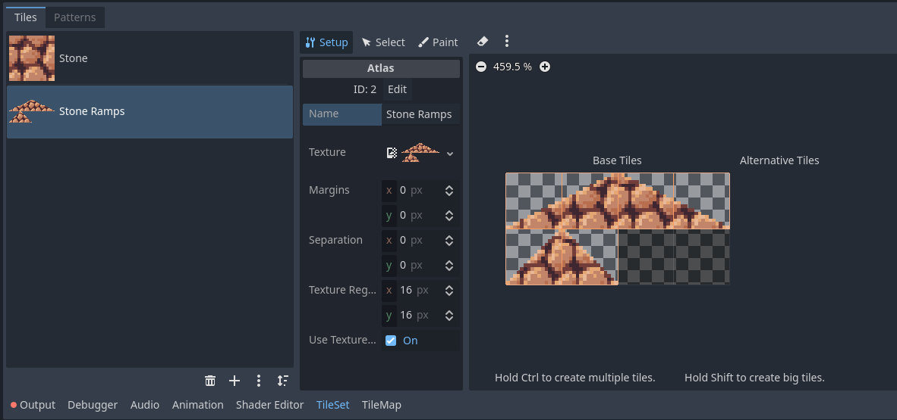
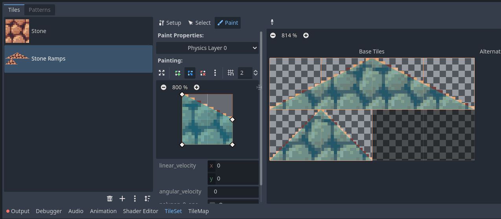
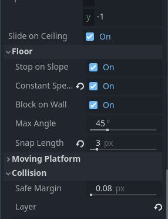

Ramps
At the moment, all of our tiles are neat right angles, making everything a bit boxy. To fix this we can add ramps, also known as slopes, to really smooth out our movement. Ramps are usually (one of) the banes of game development. Fortunately for us, Godot already does much of the work required to handle them!
Creating the Ramps
To get started we need to import the stone ramp texture from the Ramps folder in your VGDC-2024 Assets folder.
If you are not taking this course in person, you can download the assets Here
Once imported, go to your ground tiles scene, and select the tile set property in the inspector, then the tile set tab in the bottom bar. You should see your stone block tile like so:

Next press the plus icon beneath the stone tile. Select atlas and choose the newly imported ramps sprite. Select yes on the popup and rename the atlas to Stone Ramps.
Of course, the ramps still do not have collision. To add some, select the paint tab in the tileset editor and choose the physics layer 0 property. Using the shape editor below create the shapes for each tile and then click them to assign the shapes.
I recommend using the the grid snap options when making the shapes. You can enable them by pressing the icon with the magnet and choosing grid snap. For these set the grid size to 2.
Go ahead and open up your world scene. Select the GroundTiles node and in the tilemap tab in the bottom bar you can select and place the ramps into your level!
Changing Slope Properties
If you try out the new ramps you may notice some oddities with how the player interacts with ramps. We can change some properties to fix or change them. Open up your player scene, select the root node and in the inspector under floor you will see these options:
I made two changes here. First I enabled constant speed, which makes the player move at the same speed when going up and down slopes (if you prefer slopes to slow players moving up them and provide speed to players moving down, keep this disabled.) Secondly, I increased the snap length. The snap length keeps the player attached to slopes when moving down them, making movement smoother. The faster your player is the higher you will need this, but if it's too high the player can end up teleporting down when they walk of ledges.
There is a surprising amount of depth with the few floor properties here. Try messing around with some and see what is right for your game.
And that's it! Go ahead and make sure your ramps are working as you want, then move on to another module!